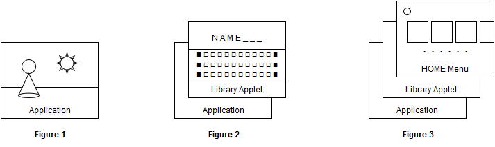

- Overview
- Target Environments
- Getting Notifications
- Program Focus States and Handling
- Types of Focus States
- Handling Changes in the Focus State
- Notification of Changes in the Focus State
- Notification of Resuming From Automatic Program Suspension
- Examples of BG Focus State-Aware Implementations
- Actual Operation Time of the Program
- Notifications of Changes in Operating Mode
- Notifications of Changes in Performance Mode
- Notifications of Exit Requests
Overview
Applications process advancing and staging in a game based on changes to the system state and changes to the focus state of the application. Applications receive these state change notifications as messages and can then perform the following.
- Stopping, resuming, and otherwise controlling the progress of the game based on notification of changes to the focus state
- Changing how the game is staged by the system, based on notification of changes in the operating mode
- Switching how richly the game is staged by the system, based on notification of changes in the system's performance mode
If these kinds of actions are not necessary for your application, there is no need to receive notifications. By default, all messages are in the non-notifying state.
Target Environments
The features described in this chapter are available only in the NX32 build and NX64 build environments.
Getting Notifications
Programs can get system state changes as notifications. Getting notifications can change the application's behavior.
However, not all notification messages are enabled by default. The application must enable the desired notification messages as necessary. The available notification messages are described in the next section.
Notification messages are defined as nn::oe::Message-typed constants (the typedef is an unsigned 32-bit integer). The following functions are for getting notifications.
- To poll for a notification:
nn::oe::TryPopNotificationMessage() - To get an event to wait for a notification:
nn::oe::GetNotificationMessageEvent() - To wait for and get a notification:
nn::oe::PopNotificationMessage()
We suggest using the different functions in these separate ways.
- To wait for a notification in a loop on a dedicated thread:
- Call
nn::oe::PopNotificationMessage()inside the loop to wait for and get the message, and then conduct the process for that message.
- Call
- To wait for a notification in a rendering loop or other loop:
- Call
nn::oe::TryPopNotificationMessage()inside the loop and, if a message is received, conduct the process for that message. - Note that if the process for a particular message is heavy, the rendering loop will interfere with its surroundings if the process is conducted inside the loop.
- Call
- (For advanced users) For finer control over the timing of messages handling:
- Wait for the appropriate
nn::os::SystemEventobtained usingnn::oe::GetNotificationMessageEvent()to be signaled, and then get the message usingnn::oe::TryPopNotificationMessage(). - You can also use a function like
nn::os::WaitAny()to wait for other events at the same time in a single thread.
- Wait for the appropriate
Do not wait for notifications by idling the nn::oe::TryPopNotificationMessage() nn::oe::TryPopNotificationMessage(), call it inside a loop such as a rendering loop that runs periodically.
The following sample code is for waiting to receive a notification in a loop on a dedicated thread.
#include <nn/nn_Macro.h> #include <nn/os.h> #include <nn/oe.h> #include <nn/nn_Log.h> #include <nn/nn_Assert.h> NN_OS_ALIGNAS_THREAD_STACK char g_MessageThreadStack[0x4000]; void HandleMessageAutoLoop(void* arg) NN_NOEXCEPT { NN_UNUSED(arg); for (;;) { auto message = nn::oe::PopNotificationMessage(); switch (message) { case nn::oe::MessageFocusStateChanged: // Notifies when there has been a change to the program's focus state. // Does not notify based on the nn::oe::SetFocusHandlingMode() specification. { auto state = nn::oe::GetCurrentFocusState(); switch (state) { case nn::oe::FocusState_InFocus: // In-focus state. break; case nn::oe::FocusState_OutOfFocus: // Out-of-focus state. break; case nn::oe::FocusState_Background: // BG focus state. break; } } break; case nn::oe::MessageResume: // Notifies when the application resumes from a suspended state. // Does not notify based on the nn::oe::SetResumeNotificationEnabled() specification. break; case nn::oe::MessageOperationModeChanged: // Notifies when the operation mode has changed between handheld mode and TV mode. // You can get the current operation mode using the nn::oe::GetOperationMode() function. // Does not notify based on the nn::oe::SetOperationModeChangedNotificationEnabled() specification. break; case nn::oe::MessagePerformanceModeChanged: // Notifies when the performance mode has changed between Normal mode and Boost mode. // You can get the current performance mode using the nn::oe::GetPerformanceMode() function. // Does not notify based on the nn::oe::SetPerformanceModeChangedNotificationEnabled() specification. break; case nn::oe::MessageExitRequest: // Notification to the program of an request to exit. // This notification is only sent if nn::oe::EnterExitRequestHandlingSection() // was called beforehand. The processes prior to existing are quickly performed, and // the application finally exits on the call to nn::oe::LeaveExitRequestHandlingSection(). break; default: // Unknown messages will be ignored. NN_LOG("Unhandled message = 0x%08x\n", message); break; } } } extern "C" void nnMain() { nn::os::ThreadType messageThread; auto result = nn::os::CreateThread( &messageThread, HandleMessageAutoLoop, NULL, g_MessageThreadStack, sizeof(g_MessageThreadStack), nn::os::HighestThreadPriority ); NN_ASSERT( result.IsSuccess(), "Cannot create message handling thread." ); nn::os::StartThread( &messageThread ); // Processing by the application. // ： } |
- Not all notifications are enabled by default. The desired notifications must be explicitly configured using the respective functions.
- Any received messages that are not necessary for your application can simply be ignored.
- Notifications are limited to one message per frame. Multiple notifications can also be sent sequentially. For this reason, regardless of which function you use to get notifications, make sure to get all of the notifications that can currently be retrieved before proceeding to the next frame.
- We recommend preparing the thread for processing message notifications as a dedicated, independent thread, if possible. This is for the following reasons.
- If the API from some other module is called on the message processing thread, that thread might be blocked for an extended time (for example if the error viewer was started). Under such circumstances, if a user operation from the HOME Menu ends the application, the application cannot process the exit request message (
nn::oe::MessageExitRequest). As a result, the user has a negative experience when the application finally ends a while after it crashed. - While the thread is blocked, it cannot handle any messages, and not only exit request messages.
- To avoid these types of situations and resolve problems, make the message processing thread an independent thread, and have this thread notify the application's own state manager when it receives a message notification from the system.
Program Focus States and Handling
Types of Focus States
Programs have the following three focus states and sleep state. Strictly speaking, the sleep state is not another type of focus state, but is described here for convenience. Programs control game advancement and other behavior according to these states.
| Types of Focus States | Description |
|---|---|
|
In-focus state |
In this state, the program is in focus. This state indicates that immediately after the program has been started from the HOME Menu it is the target for direct user operations. All threads in the program can operate. |
|
Out-of-focus state |
The state of the program not in focus, and when a library applet is starting. All threads in the program can run, but the thread that called the library applet is blocked by the relevant API (with a few exceptions). |
|
BG focus state (background |
The state of the program not in focus, and DevMenu or the HOME Menu in the foreground. Program behavior in this state differs depending on the focus handling mode (described later). (However, immediately after waking from sleep, the sleep state continues until the program resumes.) |
| Sleep State |
The state of the entire system sleeping, and program operation suspended. Programs cannot detect this state. |
The following figure depicts the different focus states of the application.

The application is already in focus when it reaches the call to nninitStartup().
Figure 1 depicts the application in the in-focus state. In this state, the application can display to the screen and render images in the foreground, output audio, and receive HID input from the user. Games and other programs can proceed with preferential use of the various resources in this state.
Figure 2 depicts the application in the out-of-focus state. In this state, some library applet is operating in the foreground, so the program's own screen display and image processing are restricted, and HID input is not received. Although audio plays, the value may be reduced by the running library applet (and in some cases may drop to zero). The various threads can run in this state, but the thread that started the library applet is blocked by the startup function. (There are some exceptions, however. For more information, see the API references for the library applets.)
Figure 3 depicts the application in the BG focus state. Program behavior in this state differs depending on the focus handling mode (described later), but the following conditions apply in all cases, so it is best that an application in the BG focus state not proceed with any basic game processing until it transitions to the in-focus state or the out-of-focus state. However, if network online status needs to be maintained, it is possible to continue operations in the background.
- The program is not displayed on the screen, and image processing is restricted (the GPU cannot be fully used).
- HID input is not received.
- Audio volume is not output.
When the application is in the BG focus state and a library applet is started from the HOME Menu, the application does not go to the out-of-focus state but remains in the BG focus state. The out-of-focus state indicates the state when the application itself has started the library applet.
Programs that start a library applet from an application take the out-of-focus state and are hidden. For more information about the types of library applets and which module calls start them, see Features > Library Applets.
Handling Changes in the Focus State
The application controls advancing the game according to the focus state. The following variations are expected depending on the application's characteristics.
- The program controls advancing the game, but you want operations to automatically stop when in the BG focus state.
- While the program controls advancing the game, you want the program to continue running even in the BG focus state for the following reasons.
- You want to maintain the communication session, such as during online play.
- You want computations to continue in the CPU, GPU, or other resource.
Depending on the situation, use the following functions in the application to specify how to handle the focus state.
- nn::oe::SetFocusHandlingMode(nn::oe::FocusHandlingMode mode);
In mode, specify one of the following focus handling modes. The default value at program start is Suspend Mode. (The default value is Individual In Focus Mode in NX Add-On 10.2.0 only.)
|
Focus Handling Mode (Value to Specify in |
Description |
|---|---|
|
Individual In Focus Mode ( |
Mode where the program automatically suspends when not in the in-focus state. Even if the focus state changes, thenn::oe::MessageFocusStateChanged notification is not sent. |
|
Suspend Mode ( |
Mode where the program automatically suspends when in the BG focus state. Even if the focus state changes, the |
|
Suspend Notification Mode ( |
Mode where the application automatically suspends when in the BG focus state and the However, this mode does not make the application aware of the BG focus state, so the change of focus state notification is not sent when transitioning from or returning to the BG focus state. |
|
Notification Mode ( |
Mode where the program continues to operate even in the BG focus state. When the focus state changes, the |
The following table summarizes the program operating states and whether a notification is sent for the various program focus states in these various modes.
| Item |
Individual In Focus Mode |
Suspend Mode |
Suspend Notification Mode |
Notification Mode |
|---|---|---|---|---|
| In-focus state | Continue operation |
Continue operation |
Continue operation |
Continue operation |
| Out-of-focus state |
Automatic suspend |
Continue operation |
Continue operation |
Continue operation |
| BG focus state | Automatic suspend | Automatic suspend | Automatic suspend | Continue operation |
| (Sleep State) | Automatic suspend | Automatic suspend | Automatic suspend | Automatic suspend |
| Notification when changing focus states | No | Yes | ||
The following table shows whether there is a "change notification" when the focus state transitions in each mode, and whether "automatic suspend" begins, continues, or stops.
| Focus State Change |
Individual In Focus Mode |
Suspend Mode |
Suspend Notification Mode |
Notification Mode | ||||
|---|---|---|---|---|---|---|---|---|
| Before transition → after transition | Notification of change | Automatic suspend | Notification of change | Automatic suspend | Notification of change | Automatic suspend | Notification of change | Automatic suspend |
| In-focus state → out-of-focus state | ----- | Start | ----- | ----- | Yes | ----- | Yes | ----- |
| In-focus state → BG focus state | ----- | Start | ----- | Start | ----- | Start | Yes | ----- |
| Out-of-focus state → in-focus state | ----- | disable | ----- | ----- | Yes | ----- | Yes | ----- |
| Out-of-focus state → BG focus state | ----- | Continue | ----- | Start | ----- | Start | Yes | ----- |
| BG focus state → in-focus state | ----- | disable | ----- | disable | ★1 | Disable | Yes | ----- |
| BG focus state → out-of-focus state | ----- | Continue | ----- | disable | ★1 | Disable | Yes | ----- |
Change notifications marked with ★1 are only sent under certain conditions. More specifically, these change notifications are only sent when the state prior to entering the BG focus state is different from the state taken after leaving the BG focus state. Change notifications are sent or not sent in the following cases.
-
Cases Where Change Notifications Are Sent
- In-focus state → BG focus state → out-of-focus state
- Out-of-focus state → BG focus state → in-focus state
-
Cases Where Change Notifications Are Not Sent
- In-focus state → BG focus state → in-focus state
- Out-of-focus state → BG focus state → out-of-focus state
If the program uses nn::oe::SetFocusHandlingMode() to change to a mode with automatic suspend, automatic suspend occurs at that time depending on the program state. However, the program automatic suspend processing is asynchronous with the issuing of nn::oe::SetFocusHandlingMode(), so note that suspend processing may occur when executing program commands several minutes after this function is called.
When the setting is dynamically changed to suspend mode or individual in-focus mode from another mode, in some cases a notification of change in the focus state (see the next section) is not sent when the program resumes from suspension. If a notification is required, use notification mode or suspend notification mode, or notification of resuming from program suspension (described later).
Notification of Changes in the Focus State
When the focus handling mode is Notification Mode or Suspend Notification Mode and a change in the application's focus state occurs, the following notification will be sent.
-
nn::oe::MessageFocusStateChanged: Focus state change has occurred
When this message is received, use nn::oe::GetCurrentFocusState() to get the current focus state type, and process according to the focus state.
For game scenes that involve high user interactivity, perform the following steps.
- If the return value is BG focus state (
nn::oe::FocusState_Background), stop the game from advancing. (As necessary, get user confirmation when operation resumes.) - If the return value is the out-of-focus state (
nn::oe::FocusState_OutOfFocus), stop the game from advancing - If the return value is the in-focus state (
nn::oe::FocusState_InFocus), resume advancing the game
By doing this, you can prevent the game from advancing in unseen ways to the disadvantage of the user.
If you call nn::oe::GetCurrentFocusState() to get the latest type of focus state after nn::oe::MessageFocusStateChanged has been reported, in some cases you get a state that appears to the application to be the same type as the previous focus state. (In other words, the application does not notice the change in state.) Design your application so it continues to run as it has been running when this happens.
This situation can arise if the focus state has actually changed but the application cannot call nn::oe::GetCurrentFocusState(), so it cannot get the current focus state.
Notification of Resuming From Automatic Program Suspension
Applications are automatically suspended by the system in situations like the following.
- The mode is suspend mode or suspend notification mode and the program has transitioned to the BG focus state.
- When the program transitions to a state other than in-focus while in individual in-focus mode.
- The system enters sleep mode and the program has transitioned to the sleep state.
Program suspension is canceled and operation resumes if you restore the application from any of these states. If you issue the following API in advance, the application can receive the nn::oe::MessageResume notification indicating resuming operation from suspension. This notification feature is not dependent on the Notification of Changes in the Focus State (described earlier). Regardless of the focus handling mode, a notification is sent when the preceding conditions are satisfied. This notification is disabled by default.
- nn::oe::SetResumeNotificationEnabled(true);
Applications can use this notification to perform the following types of processing.
- In music games, you want to synchronize the video and audio playback when the suspension is canceled
- In action games, you want to automatically cause a paused state when the suspension is canceled
The nn::oe::MessageResume resume notification is provided as a way to detect when the application has been automatically suspended by the system. For this reason, the notification is issued not only when the application wakes from the sleep state, but also when it resumes operation after being automatically suspended in the BG focus state or out-of-focus state.
When the focus handling mode is notification mode, the application can continue operating in the BG focus state. If the system enters sleep during this time, however, the application enters the sleep state and is automatically suspended. Afterward, if the application wakes up from sleep and changes from the sleep state to the BG focus state, the nn::oe::MessageResume notification is immediately sent at this time if notification of resuming is enabled.
Conditions for a program suspension may be changed or added in a future system update. For example, in the 6NUP firmware and later, functionality was added to detect license conflicts when the same user tries to start an application simultaneously on multiple NX systems and suspend the program to restraint it from starting.
For this reason, do not use the nn::oe::MessageResume message for any other purposes. In particular, do not use nn::oe::MessageResume messages to detect that the system has been put to sleep.
Examples of BG Focus State-Aware Implementations
In notification mode (nn::oe::FocusHandlingMode_Notify), programs continue to run behind the HOME Menu screen when in the BG focus state. We recommend that programs do the following when in this state.
- Continue any necessary processes such as processes that maintain network sessions.
- Avoid using other CPU processes as much as possible.
- Putting applications in a blocking state until they leave the BG focus state reduces unnecessary battery consumption.
We recommend the following handling for GPU and audio processes.
- You can continue to use GPU processes in the background.
- However, the application screen itself is not rendered.
- Also, the performance of GPU processes is limited to approximately half of the performance available in the in-focus state.
- You can also continue to use audio processes in the background.
- However, no sound is actually output.
In notification mode, change notifications (nn::oe::MessageFocusStateChanged) are received when the focus state changes, which makes it possible to know when applications leave the BG focus state. As a result, you can prevent unnecessary CPU usage by using a synchronization mechanism such as nn::os::Event to implement the following logic in the application.
- Prepare one
nn::os::Eventobject that takes the cleared state in the BG focus state and takes the signaled state in all other states. - Put this
nn::os::Eventobject in the waiting state in loops on threads created by the application.- If you also need to handle exit requests (described later), you can prepare another
nn::os::Eventobject to send exit requests within the application and then callnn::os::WaitAny()on it on each thread.
- If you also need to handle exit requests (described later), you can prepare another
The behavior of threads waiting in this blocking state is the same as when applications are in suspend mode, and as a result the program does not consume any CPU. This makes it possible to achieve similar reductions in battery consumption when using notification mode.
Actual Operation Time of the Program
With NX Add-On 6.4 and later, nn::oe::GetProgramTotalActiveTime() can get the cumulative actual operation time of the program since starting the program in the nn::TimeSpan format. This time does not include the time when the console is in sleep mode or the time when the program is automatically suspended due to changes in the in-focus state, as described in the previous section. It returns only the time when the program was running (and is reset to 0 when the program is terminated).
Use it for saving the total play time for a game to save data and the like.
Notifications of Changes in Operating Mode
The nn::oe::MessageOperationModeChanged message notifies that the operating mode of the system has been changed. The following table lists the operating modes. The current mode can be obtained using the nn::oe::GetOperationMode() function.
| Operating Modes | Description | Video Output | Audio Output |
|---|---|---|---|
| nn::oe::OperationMode_Handheld | Handheld Mode | The LCD screen on the system. | Either the console's built-in speakers, or an external audio output device (such as headphones). |
| nn::oe::OperationMode_Console | Console Mode | HDMI connection (TV) | The HDMI connected device (such as a TV) or an external audio output device (such as headphones). |
The application can conduct processes as required to accommodate the operation mode, for example by changing how the game is staged.
The operation mode reflects the state of the NX system, and when the application starts, the NX will not always be in a particular state. For this reason, if necessary, call the nn::oe::GetOperationMode() function to get the operation mode when the application starts.
nn::oe::MessageOperationModeChanged
notifications are sent after notification is enabled using the following function. The default is disabled.
- nn::oe::SetOperationModeChangedNotificationEnabled(true);
Notifications of Changes in Performance Mode
The nn::oe::MessagePerformanceModeChanged message notifies that the performance mode of the system has been changed. The following table lists the performance modes. The current mode can be obtained using the nn::oe::GetPerformanceMode() function.
| Performance Mode | Description | Specific Performance Values |
|---|---|---|
| nn::oe::PerformanceMode_Normal | Normal mode |
See the Selecting Performance Configurations page. |
| nn::oe::PerformanceMode_Boost | Boost mode |
The application can conduct processes as required to accommodate the performance mode, for example by changing how the game is staged.
The operation mode reflects the state of the NX system, and when the application starts, the NX will not always be in a particular state. For this reason, if necessary, call the nn::oe::GetPerformanceMode() function to get the performance mode when the application starts.
nn::oe::MessagePerformanceModeChanged
notifications are sent after notification is enabled using the following function. The default is disabled.
- nn::oe::SetPerformanceModeChangedNotificationEnabled(true);
The actual performance parameters for the performance mode will vary, depending on the nn::oe::PerformanceConfiguration settings. For more information, see the Selecting Performance Configurations page.
Notifications of Exit Requests
When the application is quit from places such as the menu screen, a program exit request is issued for the application. By default, a program will forcibly exit, regardless of its state, when a program exit request is issued.
However, the application can be entered into an interval for handling the program exit request by calling nn::oe::EnterExitRequestHandlingSection() beforehand. If a program exit request occurs during this interval, the nn::oe::MessageExitRequest notification will be sent to the application's own program. When the program receives this notification, save data is saved, the network session is disconnected, all processes that must be run before exiting are quickly completed, and finally, the nn::oe::LeaveExitRequestHandlingSection() function is called and the program is exited. Program exiting is an asynchronous process, so implement your code such there is no trouble with the value returned by this function. We recommend that you normally do nothing, and just continue to wait for the program to exit, as shown in the following example.
#include <nn/os.h> #include <nn/oe.h> : nn::oe::LeaveExitRequestHandlingSection() for (;;) { nn::os::SleepThread( nn::TimeSpan::FromDays(1) ); } // The process does not get to this point. |
If no nn::oe::MessageExitRequest message has been reported during the program's exit handling interval, you can end that interval by calling nn::oe::LeaveExitRequestHandlingSection(). (The program itself does not end at this time.) If a program exit request is subsequently issued outside of this interval, the program ends automatically regardless of its operating state.
In some cases, such as with some bugs, the program might never end despite the nn::oe::MessageExitRequest message. To avoid this situation, the program is forced to exit after a certain amount of time when this message is reported while the HOME Menu is in use. (As of firmware version 4.0.1, this time is 15 seconds.) When this kind of forced exit occurs, a message is shown to users informing them that the software was closed due to an error.
In situations where the user can end the program, having to wait a long time for the program to end worsens the user experience. This timeout is prepared as a workaround in a worst-case scenario. It uses a time frame that is not intended for free use by the application. Implement your programs so they finish exiting quickly, and do not face this issue.
By default, even when debugging the processes executed when closing a program, the program is forcibly closed after 15 seconds. When debugging the processes executed when closing a program, you can disable the timer for forcibly closing applications by using the feature described in Development Support Features > Disabling the Timer for Forcibly Closing Applications.
When Notifications Are and Are Not Made for Exit Requests
Program exit requests are notified in the following cases.
- When another application starts from the HOME Menu.
- The application has been explicitly exited by the user from the HOME Menu.
- When the user selects to restart or turn off the system from Power Options in the POWER Menu.
- When the play time is up, an interrupt scene starts, and the user selects to end the application there.
In the following situations, the program is forcibly ended without notification of an exit request. As a result, program exit requests cannot be handled.
- The card is removed in cases when the program was started from the game card.
- The SD card is removed.
- The system forcibly enters sleep mode because of a low battery and then forcibly shuts down because the battery has been completely drained.
- The user presses and holds the POWER Button for 7 seconds to forcibly shut down the system.
- The user presses and holds the POWER Button for 12 seconds to forcibly shut down the system.
CONFIDENTIAL